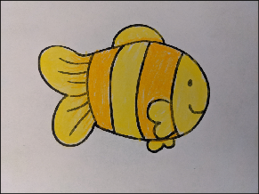
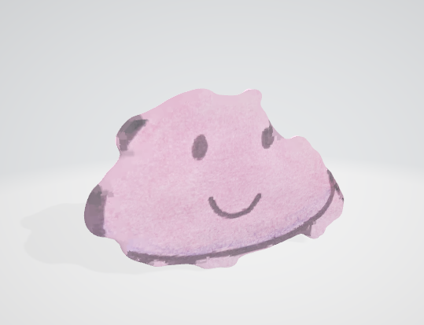

AR Sandbox Aquarium
Jayleen Li
UC Santa Barbara
jayleenli@ucsb.edu
March 2021
OVERVIEW
Decorate your room in an augmented reality space with a 3D version of your 2D drawings. Simply draw a 2D object on a sheet of white paper and take a photo with it from your phone and the backend will transform that drawing into a 3D model you can place into your room. The project is centered around an aquatic theme because the original idea came from an aquarium, hence the title. However, this project can be applied to a general setting of converting 2D images into 3D objects.
MOTIVATION
St. Louis Aquarium's Education & Conservation Center has an exhibit for kids to draw their own paper fish that can get displayed into a virtual aquarium. I wanted to do something similar but instead of having the fish be displayed onto a 2D screen, have the fish swim around your room in augmented reality.
Fig 1. GIF of St. Louis Aquarium's Education & Conservation Center exhibit
Video here: https://i.imgur.com/Yo9JxH1.mp4
DESIGN
The following diagram is how the original idea was meant to be. However the actual end product isn’t exactly as described as there were some difficulties faced regarding the flow between 3D objects to Android.
Fig 2. Application flow
The 3D object will be a basic extrusion of the 2D image, like so:
Fig 3. Image extrusion
Tech stack: Android app (Java), Python
Libraries: ARCore, Sceneform, OpenCV, Open3D
Code: GitHub
Android App APK: Google Drive
PROCESS AND IMPLEMENTATION
This section will go into detail of how the project was created into two sections: 2D to 3D Conversion Algorithm and Android App. Once the 2D to 3D conversion was complete, the later part was focused on tying everything together.
1. 2D to 3D Conversion Algorithm
The processing from a 2D image to 3D was done with Python since the support for the 3D community is stronger compared to Java. This could still tie into the Android app as described in the “Issues and Possible Fixes” section.
Note that I made the assumption that images inputted would always be drawn on a white background so I tailored certain aspects of the algorithm to take advantage of this.
The overall flow was to first prepare the image for processing with OpenCV’s GrabCut, then create a 3D point cloud using pixels from the processed image and finally perform Poisson surface reconstruction to convert the 3D point cloud into a 3D triangular mesh.
Feel free to view the Jupyter Notebook version for more insight and step by step for the conversion process.
Preparing the 2D Image
The core part of this section was OpenCV’s GrabCut algorithm. GrabCut segments an image by graph cuts into a foreground and background. [9] To detect the 2D object to convert, the GrabCut foreground graph cut was selected.
To speed up the algorithm, the original image is first scaled down to a maximum of 640000 total pixels. Then the image is thresholded so that pixels with a color value >= 180 for all three RGB values would be automatically set as background for the GrabCut algorithm to cut more accurately. Thresholding at this value also helped with variability of external lighting factors. I noticed through testing that 180 was a good value in general but worked best with moderately poor lighting. Previously without the thresholding, the GrabCut algorithm performed poorly for detecting the active object within the paper.
 Fig 4. Scaled image Fig 5. Scaled image with thresholding
The goal of the GrabCut algorithm was to retrieve the outline of the object from OpenCV’s contouring library. The image was then converted to binary to contour and one iteration of erosion was applied to smooth out the edges of the object. Note, the contour isn’t perfect due susceptibility of the image to external environmental lighting. Depending on the lighting of the image taken, different contours can be produced.
The eroded contours were smoothed with openCV and this became the contour used for the rest of the algorithm. Since there could be multiple objects within the frame, only the largest contoured object was retrieved to create the object.
Fig 6. GrabCut Image Fig 7. Largest contoured edge after one iteration of erosion (still contains some artifacts)
Creating the Point Cloud
All points inside the contour were mapped to their corresponding pixels from the image and was formatted into a 3D point cloud. Because of internal OpenCV functions, the resulting points were rotated 180 degrees around the x axis, giving an “upside-down” image. This is later corrected using open3d’s rotation library. To achieve the desired extruded image shape as described in Fig 3, the set of points of the object were copied onto two planes that were a distance of 10 pixels from each other. Normals were set in opposite directions for each plane respectively. Normals were necessary for the Ball-Pivoting Algorithm and Poisson algorithms.
 Fig 8. 3D render of the generated point cloud
Fig 9. 3D render of the generated point cloud with normals
Fig 8. 3D render of the generated point cloud
Fig 9. 3D render of the generated point cloud with normals
Triangular Mesh Reconstruction
Three methods were investigated to experiment which point cloud -> triangular mesh algorithm would work best for this project’s use case. In the project we chose the third option but I will briefly explain all of them and compare them.
For options 2 and 3, GlTF files were chosen as the export object model because it was simpler to convert the texture mappings to GlTF than other investigated object formats (.ply, .obj, .stl). Resulting object files were also scaled down by a factor of 0.0005 to match the measuring system of ARCore.
GlTF is a 3D object file type formated in JSON that maps textures encoded from base64 designed as a more efficient way to transmit 3D files over networks. The top of the JSON tree describes the scene and node of the object and attributes like, mesh, accessors, bufferviews, and buffers, work together to define the entirety of the model. Textures and buffers can be defined separately from the GlTF file but can be encoded into the same file. [10] In our case, we did not use GlTF's defined material and texture attributes to create the models, everything was defined using buffers, bufferViews, and accessors.
OBJ files + Delaunay Triangulation + Manual Mapping
Delaunay triangulation is an algorithm where given a set of points in a plane there is a triangulation that can be created such that no point inside the plane is inside the circumcircle of another triangle within the same triangulation. [1]
The wavefront .obj file format has a very straightforward format. Vertices are represented like so (x, y, z [,w]). Where the square brackets indicate the attribute is optional.
v 0.123 0.234 0.345 1.0
Polygon faces are defined like so (triangles only).
f 1 2 3
Where each number after f defines the three points by index number in the file of the triangular face. [4]
The idea here was to grab all vertices along the edge of the contoured edge and perform the Delaunay algorithm onto the set of points and create the minimum required number of triangular faces for one of the object planes and convert into the OBJ 3D object file format.
Afterwards, we would replicate this plane and then create more triangular faces to connect both planes at their edges in a zigzag format (shown in Fig 11).
Extrusion would be a simple offset calculation from the previous plane. Again, this would create the minimum number of triangular faces needed. This would then get added to the OBJ file using the format defined earlier. Later the points from the image would need to be mapped pixel by pixel to the image to create a texture mapping, and this would create our object model.
When this method was applied to the contour, it resulted in an undesirable triangulation (shown below). More work would be needed to restrict the triangulation to be within the object bounds.
Fig 12. Undesirable fish object triangulation
I believe this method would work if there was a better triangulation algorithm. The pros that these models have is that they would be of the smallest file size. However other methods were pursued for this project in favor of simpler methods.
Ball-Pivoting Algorithm
Essentially the Ball-Pivoting Algorithm, (BPA) simulates the use of a virtual ball to generate a mesh from a given point cloud describing the surface of some 3D object. This ball will “roll” across the point cloud surface based on a given radius and will catch between points and create triangles until all points are exhausted. A ball radius of 2*average point distance was chosen.
This option requires precise and accurate points and normals and thus resulted in a mesh that was undesirable since our points did not cover the entirety of the object. BPA fails with the point cloud generated because the ball would roll into the space between the two planes, and create the dotted outline as shown in Fig 14. It also took a significantly longer time than Poisson.
Due to an undesirable model and significant processing time, this option was not chosen for the final project implementation.
Fig 14. Undesirable BPA fish object triangulation
Poisson Surface Reconstruction
This reconstitution algorithm takes all data points at once and interprets the points as a spatial Poisson problem. On a high level, it considers all points at once and places a “blanket” onto the points to create the mesh. The higher the depth specified, the more fine details would be exposed from the “blanket.” In our purposes, a depth of 8 was chosen.
Fig 15. Example of Poisson Surface Reconstruction
Fig 16. Clownfish object Poisson surface reconstruction
The Poisson formulation considers all the points at once, without resorting to heuristic spatial partitioning or blending, and is therefore highly resilient to data noise. [11] The Poisson "blanket" was the best choice for the way we defined our point cloud because our point cloud had a lot of space in between and needs an algorithm that is able to interpret the intention from the missing points. Poisson reconstruction still leaves some artifacts but overall produced a very smooth object that fits the organic style of a drawing.
2. Android App
In the beginning I started with just ARCore and JavaGL but later moved the app part to Sceneform for ease of instant object placement within the AR scene.
Sceneform can only load either GlTF or GLB 3D object files at runtime. Both file formats were designed for run time 3D content loading. GLB is just a little-endian binary version of GlTF (but is actually stored in hex). It was created to minimize and combine separated buffer and texture data from GLTF files into one file. [10] I choose GLB over GlTF because of an issue mentioned in the “Issues and Possible Fixes” section. However, the conversion algorithm can only convert to GlTF so I had to convert them into GLB afterwards so that they would load into Sceneform.
Currently the app implementation is not as desired. I wanted to have the user be able to take an image from their phone and do real time image conversion into a 3D model and save the model on the cloud for immediate use within the AR scene. Instead, conversion is done offline and models are manually uploaded to Github, which is acting as a free version of a cloud upload service.
To add a new GLB model file to the Android app, add new Strings for the filenames to the MODELFILES array. This will tell the app the exact object files within this GitHub repository to look for at runtime.
Fig 16. Where models are indicated
On the camera section of the app, the user is able to take images with their phone and see the produced bitmap on the screen. This will automatically save the image on the user’s device. Bitmaps are not the best quality but if resized can produce a sharp object model.
Fig 17. Main activity of app
 Fig 18. Camera Page
Fig 19. After taking photo (saves to phone storage)
Fig 18. Camera Page
Fig 19. After taking photo (saves to phone storage)
I will explain in the next section some issues I ran into with the Android app implementation and ways I was able to go around or or if I couldn't, ideas of how these issues could be circumvented.
ISSUES AND POSSIBLE FIXES
Lighting troubles
The lighting environment greatly affects the result quality of OpenCV’s GrabCut algorithm. If the background is too bright and the colors used are also lighter, it can result in objects that look like this. For best results, take images under a darker setting and change the threshold if need be.
 Fig 20. Result jellyfish model under bright lighting Fig 21. Result jellyfish model under darker lighting
Bug in point cloud to 3D object conversion
The open3d conversion from a triangle mesh to an object actually creates a faulty GlTF file. So when this is opened in Windows 3D viewer it looks great but once the same models are loaded into sceneform they become red and black.
The workaround here was actually converting these GlTF models into GLB file type. However a direct transformation was not viable as converting the GlTF file to a GLB file directly would also be faulty. I tried to figure out why this was the case and it traces back to certain GlTF buffers set to values outside of their maximum range. A workaround was to open the file in Windows 3D viewer and then save the file as a GLB type as 3D Viewer does some model corrections behind the scenes. You will see this in the video demo in the “Results” section.
Conversion is not seamless
The original intention of this project was to make the conversion seamless for the user within the app. However due to the problem mentioned above, it was not possible in the timeframe of this project. I did come up with a design that would work assuming the faulty GlTF files could be fixed.
To make a seamless conversion, the 2D to 3D conversion should be set up as a basic web server serving a few endpoints
Here I wouldn’t have to use GitHub as a file storage system and could actually have a backend that would do all the conversion. However this method would need time to create, especially focusing on correction of faulty GlTF models. In addition I can avoid saving images directly onto the user’s phone.
RESULTS
Converting image to 3D model demo
Entire Android app + image conversion demo
DISCUSSION
For converting a point cloud intended to stay mostly flat into a 3D model Poisson surface reconstruction is the best method.
There are a variety of different 3D object file types, each with their own specialties. However because there are so many, it can cause issues between conversions.
While exploring, it seems like many CAD programs already have some algorithm behind the scenes that does efficient triangulation of 2D planes into flat 3D planes which can later be extruded. Windows Builder actually has such a feature that works fairly well. These programs may possibly use the techniques stated but these algorithms are hidden from the public. There are also few conversion APIs out there related to 3D objects. Through this project I've noticed such a gap and hope that in the future there will be more work to make these methods more open sourced to the public as this project aimed to do.
Extensions
The implementation that this project focuses on is a point cloud to triangular mesh. This opens a possibility to create more rounded 3D models by changing the image planes to be more rounded based on the distance of points that create the shape.
So instead of the current flat surface, we would change the point cloud to be more rounded as seen in the Teddy Sketching interface created by Takeo Igarashi, Satoshi Matsuoka, Hidehiko Tanaka. [8] The further apart the opposing points are from each other would create more volume in between for the shape.
REFERENCES
1. “Delaunay Triangulation.” Wikipedia, Wikimedia Foundation, 28 Feb. 2021.
2. Bernardini, F.; Mittleman, J.; Rushmeier, H.; Silva, C.; Taubin, G. The ball-pivoting algorithm for surface reconstruction. Transactions on Visualization and Computer Graphics 1999, 5, 349–359.
3. Kazhdan, M.; Bolitho, M.; Hoppe, H. Poisson surface reconstruction. Eurographics symposium on Geometry processing 2006, 1–10.
4. “Wavefront .Obj File.” Wikipedia, Wikimedia Foundation, 19 Dec. 2020.
5. “Point Cloud to Mesh, Ball-Pivoting Algorithm Brett Rapponotti, Michael Snowden, and Allen Zeng.” Point Cloud to Mesh: BPA, cs184team.github.io/cs184-final/writeup.html.
6. Michael Kazhdan and Hugues Hoppe. 2013. Screened poisson surface reconstruction. ACM Trans. Graph. 32, 3, Article 29 (June 2013), 13 pages.
7. Florent Poux, Ph.D. “5-Step Guide to Generate 3D Meshes from Point Clouds with Python.” Medium, Towards Data Science, 29 Oct. 2020, towardsdatascience.com/5-step-guide-to-generate-3d-meshes-from-point-clouds-with-python-36bad397d8ba.
8. Takeo Igarashi, Satoshi Matsuoka, and Hidehiko Tanaka. 1999. Teddy: a sketching interface for 3D freeform design. In Proceedings of the 26th annual conference on Computer graphics and interactive techniques (SIGGRAPH '99). ACM Press/Addison-Wesley Publishing Co., USA, 409–416.
9. “GrabCut.” Wikipedia, Wikimedia Foundation, 18 Dec. 2019.
10. “GlTF Documentation and Open Source library” KhronosGroup, KhronosGroup, Oct. 2016.
11. Michael Kazhdan, Matthew Bolitho, and Hugues Hoppe. 2006. Poisson surface reconstruction. In Proceedings of the fourth Eurographics symposium on Geometry processing (SGP '06). Eurographics Association, Goslar, DEU, 6170.